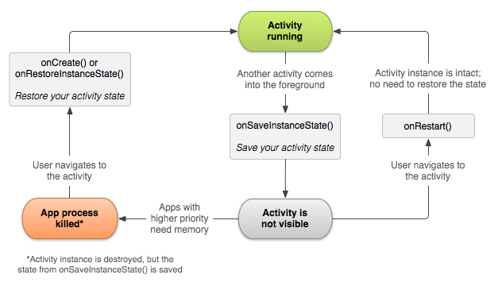

一个对android的最初的定位——它是什么，它提供了什么，以及你的应用程序如何适合它
Android是为了移动设备的一个软件栈，包括了一个操作系统，中间件和主要应用程序。Android SDK提供了必须的工具和APIs来开始开发应用程序，在Android平台上，使用Java编程语言。
下面的图展示了Android操作系统的主要组件
|
| system-achitecture |
Android会包含一系列的核心应用程序，包括一个邮件客户端，SMS程序，日历，地图，浏览器，联系人和其他等。所有的应用程序都是用Java写成的。
通过提供一个开放的开发平台，Android提供给开发者建立及其丰富和创新的应用程序的能力。开发者免费的使用硬件设备的优点，访问位置信息，运行后台服务，设置闹铃，增加状态栏的提示，等等。
开发者通过使用核心应用程序具有对同样的framework APIs的完全的访问权限。应用程序结构被设计为简单的重用组件；任何应用程序都可以发布它的功能，并且任何其他的应用程序都可以使用这些功能。同样的机制允许组件被用户的代替。
相关的所有应用程序是一个系统和服务的集合，包括：
Android包含了一系列的C/C++库，由Android系统的各种组件使用。这些功能通过Android application framework暴露给开发者。下面列出了一些核心库。
Android包含了一系列的核心库，这些核心库提供了Java语言的核心库的大部分功能
每一个Android应用程序都运行在它自己的进程里，在它自己的Dalvik virtual machine实例里。Dalvik已经被写，因此设备能够有效的运行多个VM。Dalvik VM执行文件，以Dalvik Executeable(.dex)的格式，这个格式为最小的内存占用进行了优化。VM是基于寄存器的，运行java编译器编译的类，通过dx工具转换为了.dex格式
Dalvik VM依赖于Linux Kernel来实现相关的功能，比如，线程和底层内存管理
Android依赖于Linux version 2.6来提供核心服务，比如安全，内存管理，进程管理，网络栈和驱动模型。内核也扮演了一个抽象层，在硬件和软件栈之间。
讨论了Android framework和API的特殊的部分。比如介绍了framework，以Application Fundamentals开始。然后探索了其他的主题——从设计一个用户界面和设置存储数据的资源和使用权限——如果需要的话。
Activity 是一个应用程序组件，提供了一个screen，用户可以与之交互，来做一些事情，比如拨号，照相，发送邮件，或者查看地图。每一个activity都被给予了一个window，来绘制用户界面。这个window典型的充满了整个屏幕，但是可能比screen小了一点，并且浮动在其他windows的上层。
一个应用程序通常由多个activities组成，与其他的松散的绑定。典型的，一个应用程序中的activity指定为main activity，在第一次启动应用程序的时候展现给用户。每一个activity能够在此之后启动另一个activity来表现不同的动作。每当一个新的activity启动了，先前的activity就停止了，但是系统在stack中保留了这个activity。当一个新的activity启动了，它压进back stack中，并且获取用户的焦点。这个back stack遵循后进先出的机制，因此，当用户完成了当前的activity并且按下back按钮，它就从栈中弹出，恢复先前的activity。
当一个activity因为一个新的activity启动而被停止，它识别了这个状态改变，通过activity的生命周期回调方法。这里有一些回调方法，activity可能接收，取决与它状态的改变，是否系统创建了它，停止了它，恢复了它或者销毁了它，并且每一个回调为你提供了机会来做一些指定的工作，适当的来改变状态。比如，当activity恢复了，你可以出哦功能新获取资源并且恢复先前被中断的动作。这些状态的交换都是activity生命周期的所有部分。
文档剩下的部分讨论了如何建立和使用一个activity的基础，包括一个完整的关于activity生命周期如何工作的讨论，因此你能够适当的管理转变，在各种activity状态之间。
为了创建一个activity，你必须创建一个Activity的子类(或者它的一个存在的子类)。在你的子类中，你需要实现callback方法，这个系统调用，当activity与它的生命周期交换变量状态的时候，比如当activity被创建，停止，恢复，或者销毁。这两个最终要的回调函数是：
onCreate()
你必须实现这个方法。系统调用这个方法当创建你的activity的时候。在你的实现中，你应该初始化activity中的所有组件。最重要的，你在这里必须调用setContentView()来定义用户界面的布局。
onPause()
系统调用这个方法，当用户离开你的界面的时候。通常在这里你应该提交任何改变，因为用户可能不会回来了
有一些其他的生命周期回调方法，你应该按顺序使用，来提供一个fluid user experience在activities和不期望的中断之间，会导致你的activity被停止甚至销毁掉。所有的生命周期回调函数将在稍后讨论，参考Manageing the Activity Lifecycle.
Implementing a user interface
activity的user interface由views的继承关系提供——对象继承自View类。每个view控制一个特别的矩形区域，在activity的窗口内，并且能够响应用户的交互。比如，view可能是一个button，当用户按它的时候初始化一个动作。
android提供了一些ready-made views，让你能够使用来设计和组织你的布局。"Widgets“是views，提供了一个可视化元素，为screen，比如一个button, text field， checkbox或者是一个image。Layouts是views，继承自ViewGroup，提供了一个独立的布局模型，为它的子views，比如一个linear layout， 一个grid layout，或者relative layout。你也能够子类化view类和viewgroup类来创建你自己的控件和布局，并应用它们到你的activity layout中。
平常的方法来定义一个布局，是使用一个XML布局文件，保存在你的应用程序resources中。这个方法，你能够维护用户界面的设计，与定义在activity的行为中的源码独立开。你可以设置布局作为UI，为你的activity使用setContentView()，传递布局的资源ID。你也可以创建一个新的Views在你的activity代码里，建立一个view继承，通过插入新的views到viewgroup中，然后使用布局，通过传递根viewgroup到setContentView()中。
关于创建一个用户界面的更多信息，参考User Interface文档。
Declaring the activity in the manifest
你必须声明你自己的activity在manifest文件中，以便能被系统访问。为了声明你的activity，打开你的manifest文件，添加一个<activity>元素，作为<application>的孩子
<manifest ...>
<application ...>
<activity android:name=".ExampleActivity"/>
...
</application ...>
...
</manifest ...>
这里有一些其他的属性，你能够在这个元素内包含，为了定义属性，比如activity的label，icon，或者主题样式等。android:name属性是唯一需要的属性——它特指了activity的类名。一旦你发布了你的应用程序，你不应该改变这个名字，因为如果你这么做了，你可能破坏一些功能，比如application shortcuts.
Using intent filters
<activity>元素也可以指定各种intent filters，使用<intent-filter>元素——为了声明，其他的application组件能够如何activate它。当你创建一个新的应用，使用Android SDK工具，为你自动创建的activity桩，包含了一个intent filter，描述了activity响应main的动作，并且一个你该被放置在launcher中的类别，intent filter看起来像是：
<activity android:name=".ExampleActivity" android:icon="@drawable/app_icon">
<intent-filter>
<action android:name="android.intent.action.MAIN" />
<category android:name="android.intent.category.LAUNCHER"/>
</intent-filter>
</activity>
<action>元素指定了main是应用程序的入口点。<category>元素指定这个activity应该被在系统的launcher中列出来。
如果你的程序是自包含的，不允许其他的程序激活它的activities，那么你不需要任何其他的intent filters。只有一个activity应该具有main动作和launcher类别。就像是前一个例子那样。你不想让其他程序用的activities应该不含有intent filters，并且你自己可以启动他们，用明确的intents。
但是，如果你想要你的activity响应含蓄的intnets，那些从别的程序中分发过来的，那么你必须为你的activity定义附加的intent filters。对于每种你想要响应的intent的类型，你比需包含一个<intent-filter>，包含着<action>元素和可选的<category>元素，或者一个<data>元素。这些元素指定了你的activity能够响应的intent的类型。
你可以通过调用startActivity()来启动另一个activity,传递一个intent来描述你想要启动的activity。这个intent既指明了你想要启动的确切的activity，或者描述了你想要表现的动作的类型(系统为你选择合适的activty，甚至可能是另外的activity中的)。intent也能为activity的启动传递一些数据。
当在你自己的程序中工作时，你会经常需要简单的启动一个已知的activity。你也可以创建一个intent，明确的定义你想要启动的activity，使用class name。比如，这里有一个，一个activity如何启动另一个叫做SignInActivity的activity。
<exmaple> Intent intent = new Intent(this, SignInActivity,.class); startActivity(intent); </example>但是，你的程序可能也想要做同样的动作，比如发送一个email，短信或者更新状态，为你的activity使用data。在这种情况下，你的程序可能没有自己的activities来做这些动作，因此你可以用设备上其他程序提供的activities来替代，为你做这些事情。这是intents有价值的地方——你能够创建一个intent，描述一个你想要执行的action，然后系统启动相应的activity，从另一个应用中。如果有多个activities能够控制intent，那么用户能够选择那一个来运行。例如，如果你想要允许用户发送一个邮件信息，你可以这么创建intnet:
Intent intent = new Intent(Intent.ACTION_SEND); intent.putExtra(Intent.EXTRA_EMAIL, recipientArray); startActivity(intent);
EXTRA_EMAIL这个增加到extra的是一个字符串数组，是邮件地址，要发送的邮件。当一个邮件程序响应这个intent的时候，它读取这个字符串数组，并放置到to的区域，作为收件人。这种情况下，邮件程序的activity启动，并且当用户完成后，你的activtiy再恢复。
Starting an activity for a result
有些时候你希望从你启动的activity上接收一个结果。这种情况下，用startActivityForResult()来启动activity。然后从后面的activity收回结果，实现onActivityResult()回调方法。当后续的activity完成后，它返回一个result在Intent中，到onActivityResult()方法中。
举例，或许你想要用户选择一个联系人，让你的activity对联系人信息做一些事情。这里给出你如何创建一个intent并且控制结果：
private void pickContact() {
//Create an intent to "pick" a contant, as defined by the content provider URI
Intent intent = new Intent(Intent.ACTION_PICK,, Contacts.CONTENT_URI);
startActivityForResult(intent, PICK_CONTACT_REQUEST);
}
@Override
protected void onActivityResult(int requestCode, int resultCode, Intent data) {
// if the request went wel (OK) and the request was PICK_CONTACT_REQUEST
if(resultCode == Activity.RESULT_OK && requestCode == PICK_CONTACT_REQUEST) {
//Perform a query to the contact's content provider for the contact's name
Cursor cursor = getContentResolver().query(data.getData(), new Stringp[] {Contacts.DISPLAY_NAME}, null, null, null};
if (cursor.moveToFirst()) { //True if the cursor is not empty
int columnIndex = cursor.getColumnIndex(Contacts.DISPLAY_NAME);
String name = cursor.getString(columnIndex);
// Do something wth the selected contact's name ...
}
}
}
</exmaple>
这个例子展示了你应该在onActivityResult()方法中使用的基本逻辑，来控制一个activity的结果。第一个条件检查了是否request是成功的，如果成功了resultCode将会是RESULT_OK，以及这个相应的结果是已知的，这种情况下requestCode匹配第二个参数，从startActivityForResult()发过来的。查询在Intent中返回的data。
发生的是，ContentResolver执行查询，返回一个Cursor，允许查询的数据可读。
***** Shutting Down an Activity
你可以通过调用finish()方法关闭activity。你也可以通过调用finishActivity()来关闭应用。
注意： 大多数情况下，你不应该明确的结束一个activity。就像是下面讨论的activity生命周期一样，android系统管理着activity的生命。因此你不需要结束你自己的activities。调用这些方法可能会影响用户的使用经验，当你确信不需要用户返回activity的实例的时候再结束它
***** Managing the Activity Lifecycle
通过实现回调方法管理你的activity的生命周期，是开发健壮和轻便的应用程序的重要方式。activity的lifecycle直接被相关的activity影响，它的任务和back statck。
一个activity实际上存在三种状态：
Resumed
activity在屏幕的前台，获取用户焦点(这个状态有时候也叫做running)
Paused
另一个activity在前台并且获取了焦点，但是这个仍然可见。也就是说，另一个activity可见，并且在这个上面，并且那个activity有部分透明或者没有覆盖整个屏幕。一个paused activity是完全的alive的(activity的对象在内存中，它维护着所有的状态和成员信息，仍然连接到窗口管理器)，但是能被系统在低内存状态下杀死。
Stopped
这个activity完全的隐藏起来，被另一个activity(这个activity现在在后台运行)。一个stop的activity也还alive着(这个activity对象在内存里，保留着所有的状态和成员信息，但是没有连接到窗口管理器)。但是，它不再对用户可见，并且它呢个能被系统在任何需要的时候杀死。
如果一个activity是paused或者stopped，那么系统可以drop it从内存中，或者asking它finish掉(通过调用它的finish方法)，或者简单的杀死它的进程。当这个activity再次被打开(在finished或者killed之后)，它必须被再完全的created。
*Implementing the lifecycle callbacks*
当activity在不同的状态之间切换时，它通过回调方法被通知。所有的回调方法都是钩子，你可以重写来完成适当的工作。
<example>
public class ExampleActivity extends Activity {
@Override
public void onCreate(Bundle savedInstanceState) {
super.onCreate(savedInstanceState);
// The activity is being created.
}
@Override
protected void onStart() {
super.onStart();
// The activity is about to become visible.
}
@Override
protected void onResume() {
super.onResume();
// The activity has become visible (it is now "resumed").
}
@Override
protected void onPause() {
super.onPause();
// Another activity is taking focus (this activity is about to be "paused").
}
@Override
protected void onStop() {
super.onStop();
// The activity is no longer visible (it is now "stopped")
}
@Override
protected void onDestroy() {
super.onDestroy();
// The activity is about to be destroyed.
}
}
注意：你对这些生命周期方法的实现必须总是调用父类的实现，在做任何工作之前，就像是上面展现出来的那样。
总的来说，这些方法定义了activity的整个生命周期。通过实现这些方法，你可以管理三个嵌套的循环，在activity的生命周期内：
下图说明了这些循环，和activity在状态间的路径。矩形表示回调方法，当activity在两个状态间变换时的可以实现的操作方法。
 |
| activity lifecycle |
同样的生命周期方法列在下表中，描述了更详细的信息
A summary of the activity lifecycle's callback methods
| Method | Description | Killable after? | Next |
| onCreate() | Called when the activity is first created. This is where you should do all of your normal static set up — create views, bind data to lists, and so on. This method is passed a Bundle object containing the activity's previous state, if that state was captured. Always followed by onStart(). | No | onStart（） |
| onRestart() | Called after the activity has been stopped, just prior to it being started again. Always followed by onStart() | No | onStart() |
| onStart() | Called just before the activity becomes visible to the user. Followed by onResume() if the activity comes to the foreground, or onStop() if it becomes hidden. | No | onResume() or onStop() |
| onResume() | Called just before the activity starts interacting with the user. At this point the activity is at the top of the activity stack, with user input going to it. Always followed by onPause(). | No | onPause() |
| onPause() | Called when the system is about to start resuming another activity. This method is typically used to commit unsaved changes to persistent data, stop animations and other things that may be consuming CPU, and so on. It should do whatever it does very quickly, because the next activity will not be resumed until it returns. Followed either by onResume() if the activity returns back to the front, or by onStop() if it becomes invisible to the user. | Yes | onResume() or onStop() |
| onStop() | Called when the activity is no longer visible to the user. This may happen because it is being destroyed, or because another activity has been resumed and is covering it. Followed either by onRestart() if the activity is coming back to interact with the user, or by onDestroy() if this activity is going away. | Yes | onRestart() or onDestroy() |
| onDestroy() | Called before the activity is destroyed. This is the final call that the activity will receive. It could be called either because the activity is finishing, or because the system is temporarily destroying this instance of the activity to save space, You can distinguish between these two scenarios with the isFinishing() method. | Yes | nothing |
Killable after这列说迷宫能了是否系统呢个能够杀死进程管理的activity，在方法返回之后，而不需要执行activity的代码的其他语句。三个方法标记为Yes（onPause(),onStop()和onDestroy()）。因为onPause()是这三个的第一个，一旦activity被出阿哥年间，onPause()是它呢个能在被杀死前确认的最后的方法——如果系统必须恢复内存，那么onStop()和onDestroy()可能不会被调用。那么，你应该使用onPause()来写关键数据来存储。但是，你应该是让什么信息必须保留是可选择的在onPause()过程中，因为任何阻塞的进程在这个方法中，阻塞了到下一个activity的交换，让用户觉得变慢了。
在Killable列中标记为No的列，当它们被调用的时候保护了进程控制的activity从内存中杀死。那么，activity是可被杀死的，从onPause()中返回，到onResume()被调用。他将不会是可被杀死的，直到onPause()再次调用和返回。
注意：activity定义在表中的技术上的可被杀死，可能仍然被系统杀死——但是它仅在没有其他资源可以使用的时候被杀死。当一个activity可能被杀死，在Processes and Threading文档中有更深入的探讨
Saving activity state
介绍管理activity生命周期的部分简要的提到了，当一个activity被paused或者stopped，这个activity的状态是被保留的。这是真的，因为activity对象仍然在内存中，当它paused或者stopped的时候——所有的信息关于成员和当前状态的都仍然alive着。那么，用户做的任何改变都保留着，因此当activity返回到前台的时候(当它resumes)，这些改变还存在在那儿。
但是，当系统销毁一个activity来恢复内存的时候，activity对象被销毁了，因此系统不能简单的恢复它的状态。代替的是，系统必须重新创建这个activity对象，当用户导航回它的时候。但是用户没有意识到系统销毁并且重新创建了它，那么可能希望这个activity就像它之前的样子。这种情况下，你可以确保这个activity的重要信息通过实现一个附件的回调函数而保留下来，onSaveInstanceState()允许你保存activity的状态信息。
系统在让activity销毁之前调用onSaveInstanceState().系统传递这个方法一个Bundle，这样你可以保存状态信息，以name-value对的方式，使用putString()和putInt()的方法。然后，如果系统杀死了你的程序，而用户又导航回来，系统会重新创建activity和传递Bundle到onCreate()和onRestoreInstanceState()。这个这些方法，你能够把保存的状态从Bundle取出，并恢复activity的状态。如果没有状态信息需要存储，那么Bundle传递给你一个null。
|  |
| restore instance |
注意：没有保证在activity被destroyed之前调用onSaveInstanceState()，因为有些情况是它不需要保存状态。如果系统调用了onSaveInstanceState(),那么它在onstop()之前，也可能会在onPause()之前。
但是，即使你什么都不做，并且不实现onSaveInstanceState()，一些activity状态也被activity类的默认的onSaveInstanceState()函数所保存。尤其是，对布局中的每个view的默认onSaveInstanceState()调用，允许每个view提供它自己的应该保存的信息。基本在Android framework中的每个控件都实现了这个方法，比如任何UI可见的改变豆子动的保存和取出当你的activity被重新创建的时候。举例，EditText控件保存了任何键入的文本，CheckBox控件保存了哪些被选中了。你需要做的仅是提供一个独一无二的ID，为每一个控件，你想要保存它的状态的。如果控件没有一个ID，那么系统就不会保存它的状态
尽管onSaveInstanceState()的默认实现保存了你的activity的UI的有用信息，你仍然需要重写它来保存更多的信息。比如，你可能需要保存成员变量值在activity生命周期内改变的。
你也可以明确的停止view在你的布局中，不让它保存状态，通过设置android:saveEnabled属性为"false"或者调用setSaveEnabled()方法。通常你应该不能除能这个属性，但是如果你想要存储不同的activity UI的状态，你可以这么办。
因为默认的onSaveInstanceState()实现帮助保存了UI的状态，如果你重写这个方法来保存额外的信息，你应该总是调用父类的onSaveInstanceSate()实现，在做其他任何工作之前。同样的，你应该调用父类的onRestoreInstanceState()实现，如果你重写了它，因此，默认的实现可以取回view状态
注意：因为onSaveInstanceState()不保证一定被调用，你应该使用它，仅当记录UI的状态的时候——你不应该用它存储持久的数据。代替的，你应该使用onPause()来存储持久的数据，当用户离开的activity的时候
一个简单的方法来测试你的程序取回它的状态的能力就是简单的旋转设备，导致屏幕的旋转。当屏幕旋转的时候，系统销毁并重新创建activity来应用改变的资源，为新的屏幕配置。为了这个原因，它非常重要，你的activity完全的取回了它的状态，当它重新被创建的时候，因为用户通常在使用应用程序的时候会旋转屏幕
Handling configuration changes
一些设备配置可以在运行时改变(比如屏幕旋转，键盘可用，语言等)。当这种改变发生的时候，Android重新创建运行的activity(系统调用onDestroy()然后马上调用onCreate())。这个行为被设计为帮助你的程序适应新的配置，来自动的重新装载你的应用用改变的资源，你已经提供过的。
如果你合适的设计了你的activity来控制一个重启，因为屏幕的改变，并且取回了activity的状态，你的程序将会更加有弹性，对于其他的未知的事件，在activity的生命周期里。
最好的方式来处理这种restart是save和restore你的activity的状态，通过onSaveInstanceState()和onRestoreInstanceState()。
Coordinating activities
当一个activity启动了另一个，它们都经历了生命周期交换。第一个activity暂停并且停止(尽管，如果它仍然在后台可见，那就还没停止)，当其他的activity被创建。当这些activities共享数据保存在硬盘上还是其他哪里，很重要的需要理解第一个activity在第二个创建之前没有完全停止。而是，启动第二个activity的进程与停止第一个activity的有部分重叠。
生命循环的回调的顺序已经被很好的定义了，尤其是当两个activities在同一个进程中，一个启动另一个的时候。这里有一个顺序说明，当activity A 启动 activity B：
1. Activity A的onPause()方法执行
2. Activity B的onCreate(),onStart()和onResume()方法按顺序执行，Activity B现在获取用户焦点
3. 然后如果Activity A不在屏幕上可见，它的onStop()方法执行
这个可预见的生命周期回调序列允许你管理activity一个到另一个的信息交换。例如，如果你必须在第一个activity停止的时候写数据库，以便下面的activity能够读取，那么你应该在onPause()里面写数据库，而不是在onStop()里面。